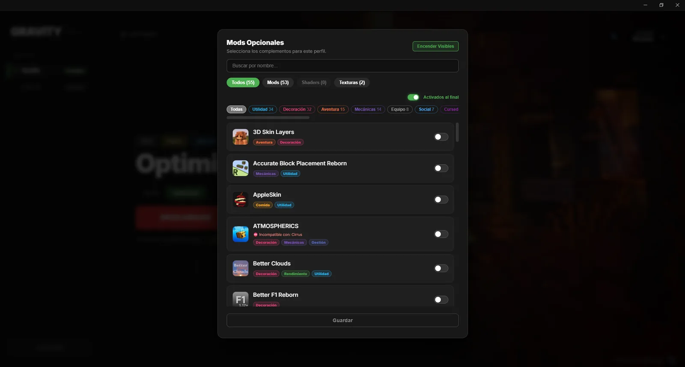
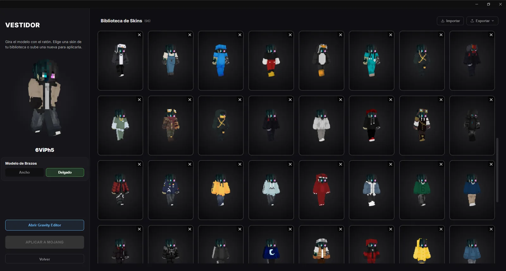
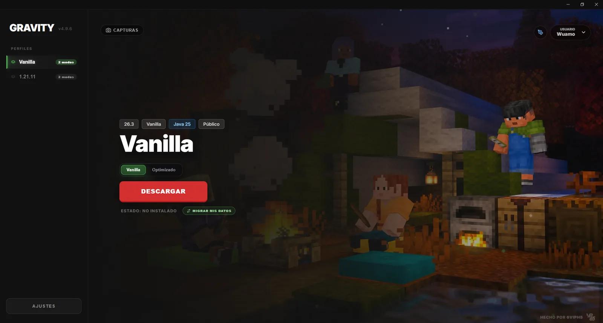

Todo tu Minecraft en un solo launcher
Perfiles, mods, texturas, skins y capturas en un mismo lugar. Eliges tu perfil, pulsas Jugar y Gravity se encarga del resto.
- Gratis
- Para Windows
- Se actualiza solo
- Con o sin cuenta premium



Funciones
Lo que hace Gravity
Un launcher pensado para que no te pierdas entre versiones, mods y carpetas.
Texturas y shaders
Se gestionan junto a los mods, con su propio filtro y sus interruptores.
Migrar
Pasa entre perfiles tus ajustes y controles, servidores, configs de mods, resourcepacks, shaderpacks, minimapas y capturas.
Premium o no premium
Entra con tu cuenta de Microsoft o en modo offline con el nombre que quieras. Puedes abrir varias instancias a la vez.
Java incluido
Gravity descarga el Java que necesita cada versión, así que no tienes que instalarlo tú. Una barra te muestra el progreso.
Cómo empezar
De la descarga al juego
Cuatro pasos y estás dentro.
Descarga
Baja el instalador desde esta página.
Instala
Ábrelo y sigue el instalador en español. No pide permisos de administrador.
Entra
Inicia sesión con Microsoft o elige el modo offline y escribe tu nombre.
Elige y juega
Elige un perfil en la barra lateral y pulsa Jugar. Gravity descarga lo que falte.
Descarga Gravity
Un solo instalador para Windows. Gratis y siempre en su última versión.
Descargar para WindowsInstalación solo para tu usuario
¡Gracias por descargar! Abre el archivo para instalar Gravity.
- Windows 10 u 11, 64 bits
- No necesitas cuenta: hay modo offline
- Internet en la primera descarga
Si Windows muestra «Windows protegió su PC». Es normal con programas nuevos que no tienen firma de pago. Pulsa «Más información» y luego «Ejecutar de todas formas».
Preguntas
Preguntas frecuentes
Respuestas cortas a lo más común.
¿Necesito una cuenta de Minecraft?
No. Puedes entrar en modo offline (no premium) con el nombre que quieras. Si tienes cuenta premium, también puedes iniciar sesión con Microsoft.
¿Puedo agregar mis propios perfiles o mods?
Por ahora no. Los perfiles y los mods opcionales los prepara y mantiene el creador de Gravity. Tú eliges el perfil y enciendes o apagas los opcionales que quieras.
¿Por qué Windows me muestra un aviso al instalarlo?
SmartScreen avisa con cualquier programa nuevo que no está firmado digitalmente. Pulsa «Más información» y «Ejecutar de todas formas».
¿Se actualiza solo?
Sí. Gravity busca versiones nuevas y te avisa para actualizarse. Los perfiles y sus mods también se actualizan solos.
¿Qué es el Gravity Editor?
Es el editor de skins de Gravity, con vista 3D. Se abre en su propia ventana y puedes usarlo mientras el launcher sigue abierto.
Encontré un error, ¿dónde lo cuento?
Abre una incidencia en la página del proyecto en GitHub.